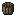

1.20.1 / (Addon) Firmalife擴充套件模組 / 種植盆

種植盆
種植盆
Planters are used to grow crops inside a Greenhouse. To see the status of a planter, you can look at it while holding a Hoe. Crops in planters consume Nutrients in a similar way to Crops. Planters should be placed inside a valid Greenhouse and activated with a Climate Station. Planters need at least some natural sunlight to work.



種植盆必須要澆水才能生長. 你需要使用噴壺, 它用木桶, 一個裝水的容器, 以及木材來合成. 手持噴壺按右鍵就可以給附近的植物澆水, 對著水源按右鍵就可以重新灌滿水.


大號種植盆是最簡單的一種種植盆. 它可以用種子種植一株農作物, 並且在農作物成熟後按右鍵收穫.
大號種植盆可以種植綠豆, 西紅柿, 甘蔗, 黃麻, and 穀物. 但如果要種植穀物, 你需要一個銅或更高等級的溫室.
四槽種植盆可以一次種植四株農作物. 這些農作物都會從同一個養料池汲取營養, 並且在成熟後可以按右鍵來單獨收穫.
四槽種植盆可以種植甜菜, 捲心菜, 胡蘿蔔, 大蒜, 洋蔥, 馬鈴薯, 和大豆. 這些農作物都可以在任意等級的溫室中種植.
盆栽種植盆可以用樹苗來種植小型果樹. 按右鍵就可以收穫水果.
盆栽種植盆可以種植除香蕉外的任何果樹, 而香蕉需要懸掛的種植盆. 他們都會消耗氮作為主要的營養, 並且需要鐵或更高等級的溫室才能種植.
懸掛的種植盆可以倒著種植農作物. 成熟後可以按右鍵收穫.
懸掛的種植盆可以用種子種植西葫蘆, 以及用樹苗種植香蕉. 西葫蘆可以在任意等級的溫室種植, 但香蕉需要鐵或更高等級的溫室. 懸掛的種植盆必須被掛在一個固體方塊的下方.
格子種植盆可以種植各種莓果灌木. 莓果可以按右鍵收穫.
格子種植盆有一種獨特的繁殖灌木的功能. 如果一個格子種植盆放在另一個的上方, 並且下面的那個種植盆有一個成熟的莓果灌木, 那麼它就有可能生長到上方的種植盆裡. 格子種植盆可以種植所有的莓果灌木, 但蔓越莓灌木除外. 它們需要鐵或更高等級的溫室才能正常工作. 這些灌木喜歡氮.

2
Hydroponic Planters grow rice and cranberry bushes. They work the same as a quad planter, except that they do not need to be watered. Instead, they must have an
- Sprinkler Pipe below them that is supplying water. Without the pipe they will not grow.